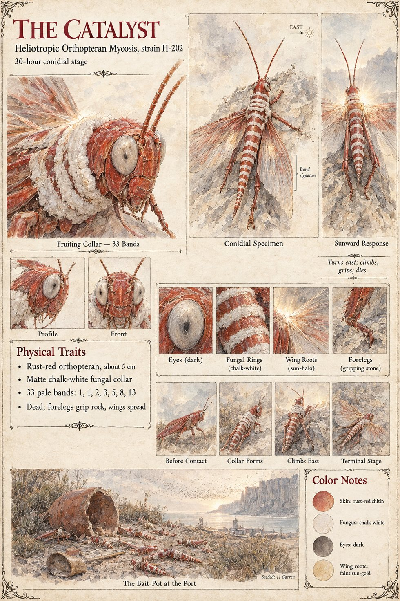

Strain H-202
Catalyst of Case 0202 · Heliotropic Orthopteran Mycosis, strain H-202 · seeded on the eleventh of Garren
A banded fungal parasite of an orthopteran swarm, broken open from a sealed clay bait-pot in the upper broom-scrub of the Port on the eleventh of Garren, where the swarm's line of descent will place its first night's roost. It carries no instructions and no Cultivator knowledge. It reaches its conidial stage within thirty hours of contact and spreads by contact alone, which is why the trenches matter: held animals crowd, and crowded animals in a population carrying a contact-transmitted spore infect one another faster than any open-field swarm could in a season. The Log puts contact density in the gorge at eleven times free-flight baseline and infection at an estimated eighty-eight in a hundred by the end of the fourth day. At dusk of the fifth the infected animals begin to climb; at first light on the twenty-seventh of Havren they turn, as one, from the line of the swarm's advance to the line of the sun, go up the nearest east-facing surface, grip with the forelegs, spread their wings and die.
On each body a chalk-white fruiting collar forms within the hour, thirty-three pale bands in the order one, one, two, three, five, eight, thirteen, so that a sufficiently rigorous investigator may infer a non-natural origin without any disclosure from the Observer's desk. The flesh of the dead is edible, an inherited feature and not an intended one, and tastes of roasted chestnuts and butter. The strain is self-limiting and was never recovered; the animals that leaked through in the first days, infected more slowly in open country, died singly over the next fortnight on the east-facing walls of the valley, and every preserved specimen in the Order's cabinet at Montclar carries the bands, beside which the clerk Matteo wrote same on all; curious in pencil. By the Log's reckoning the works at the Throat held the swarm in the gorge five point one days longer than an open crossing would have, long enough for the strain to do what it does; without them the swarm would have passed the Narrow in a morning and ended in open country after the crop was gone. The manuscript gives no length for the insect; the sheet's rust-red body of about five centimetres is its own.